保养 | 用你的“娃娃肌”，闪耀整个夏天！
Miss沐夏
亮白娃娃般闪耀透亮的肌肤不仅让你在朋友聚会中脱颖而出，在各种朋友圈的合照中一眼被锁定，还会在约会时完美绽放。所以告别平凡，亮白出众的肌肤尤为重要！
亚洲人的肤质和欧美人的不同，最适合我们亚洲人的还得是闪耀透亮的肌肤。这种亮，就像从肌底散发出来的健康光泽，就像是可以照亮世界的行动发光体一样~

宝宝们还记得《初恋这件小事》里黯沉的灰姑娘“小水”么？
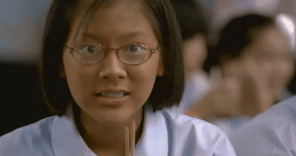这部泰国电影当年火得一塌糊涂，还把夏夏给看哭了~女主角小水相貌平平、学习平平、体育平平、家室平平。
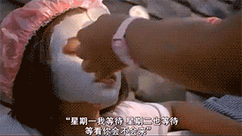最后人家通过努力上演灰姑娘逆袭的故事，成功俘获学长芳心，究其秘诀，除了改变造型之外，关键就在于变得亮采的肌肤！
肤色和透亮程度对颜值的影响真的不是盖的，肌肤变亮白的小水宛若两人……所以拥有了通透的肌肤，还怕不能斩男咩？
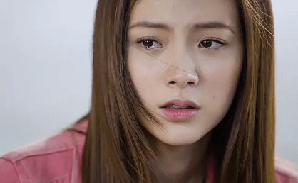所以我们也要赶紧趁着这个夏天，跟“黯沉”say byebye，唤醒“透亮肌”~但小仙女们应该具备哪些基本技能呢？
基本技能：爽肤水
夏天的紫外线强烈，气温较高，这时肌肤就受到了相当大的考验~一天下来，难免会黯沉、干燥、甚至是肤况粗糙。当这些现象出现就说明你需要亮采+补水护理啦！我们要解决干燥这个问题——爽肤水尤为关键。
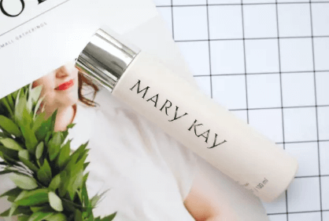这次想特别推荐大家一个亮采界的除锈绝招——玫琳凯亮采®爽肤水，它含有MELACEP PLUS+® 亮采复合成分，蕴含高山火绒草提取物、藻提取物、水解植物蛋白。迅速补水的同时还能告别黯沉，可谓是一举两得~
其实我相信玫琳凯这个品牌大家都不陌生，我也很早就有用过呢，而我最爱的就是这款亮采®爽肤水。
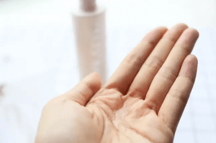 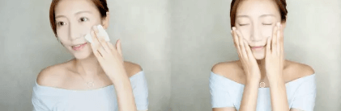虽然我的肌肤偏干，但我非常讨厌那种粘腻的爽肤水，而这款保湿力足够的同时又感觉很清爽舒服，亲肤感超强。
我晚上会先配合化妆棉擦拭一遍肌肤（二次清洁的同时还可以轻微护理角质层），然后再用手轻拍一遍水；而早晨只拍一遍水就OK咯~
对于我这种内油外干的皮肤而言，在空调房呆一天也不会有拔干的感觉，很滋润舒适，使用感很棒。
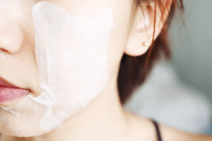它还可以配合可分层的化妆棉进行湿敷，效果就像面膜一样，瞬间补水能力超棒！有时出差不能带太多东西，有了这个全能选手还怕啥？就连熬夜脸也能搞定~
基本技能：精华液
如果把每天用的洁面、爽肤水和乳液比喻成一日三餐的话，那么精华液就像补品一样，在肌肤“体力虚弱”就显得尤为重要——帮我们补充缺失的营养成分。
再加上我们亚洲人肌肤本就偏黄偏黯沉，因此提亮肤色就成为当务之急。
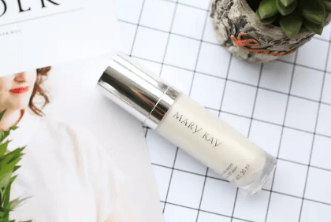想get亮采好肌底就要靠玫琳凯亮采®精华液咯~它同样含有MELACEP PLUS+®亮采复合成分，它可是对抗肤色黯沉的一把好手！所以你离净透亮采的肌肤，只差这瓶精华液啦！（偷笑脸.gif）
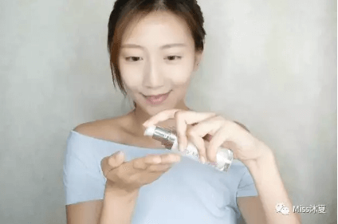 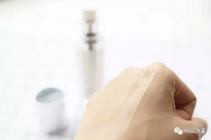我知道夏天大家都不愿意一层层的在脸上叠加，但这款精华的质地轻盈好吸收、温和不刺激肌肤，敏感皮的妹子就更加推荐啦~上脸后滑滑嫩嫩的，还顺带有角质层护理功效，补水效果也棒棒哒！
用了一周后，最明显的变化就是脸上的光泽度和透亮度。
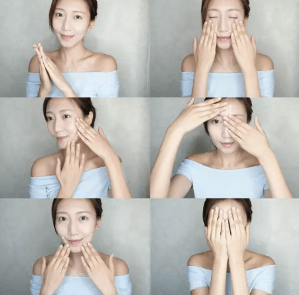分享一些小手法给大家~
1. 先把精华液均匀分布在手掌心/手指处；
2. 将精华液大致上脸，稍作轻拍；
3. 左右脸颊分别采用提拉的手法进行按摩；
4. 额头部分向上提拉淡化抬头纹；
5. 下颌骨的地方从下巴向嘴角方向进行提拉；
6. 搓热双手覆盖全脸，进一步促进吸收。
当然，大前提就是精华要用够量，这个可不能吝啬哇~这样做按摩提拉的时候才不会拉扯到肌肤~
按摩完，脸部轮廓整体变得明显啦！最后再分享一个技巧给仙女们，全脸涂抹精华液后，可以在有瑕疵or黯沉的地方局部叠加涂抹，效果更好哦！
基本技能：粉底乳
粉底可以帮我们均匀肤色，打造更好的肌肤质感。一款好的粉底乳要能遮瑕够持久，最重要的是要告别“大白面具”，让肌肤看起来更加透亮。如果粉底中加入了亮采成分，那就更棒啦！

玫琳凯的彩妆一直都口碑不错，小仙女们可以试试玫琳凯亮采®粉底乳~这款粉底也含有MELACEP PLUS+®，每天带着妆就能让肌肤变得更透亮，是现在火得不行的“养肤粉底”呢~
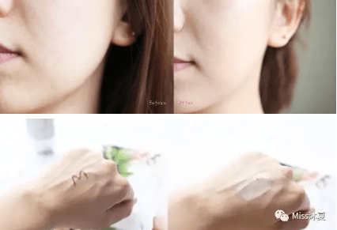它的粉质非常细腻，一点油腻感都木有，个人感觉对任何肤质都是友好哒~而且这个色号（柔白色）跟我的肤色也非常贴合，不会有那种惨白or厚重的妆感。而是让你感觉到自己的皮肤突然间都提亮了一个色号，特别通透的质感，hin高级~
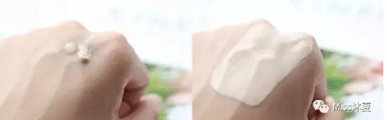不过透亮润透并不意味着它的遮瑕和修饰效果差，这一点也让我这个彩妆老司机非常惊讶！过几个小时后稍微出点油，妆效更好。有了它，你的后续彩妆上妆当然更加得心应手，既自然又服帖，各种潮流妆容随意打造。
如果买回来粉底不适合自己难道只能扔掉吗？仙女们可以尝试与精华混用，粉底就会变得滋润很多。比如用玫琳凯亮采®粉底乳与亮采®精华液混合，视当天肌肤状况进行比例的调整，可使后续上妆更服帖！
学会了这几招“透亮肌”的大法，是否看到了“亮白娃娃肌”在向你们招手？先来看看夏夏今天打造的夏日最IN亮白娃娃妆吧~
变身亮白娃娃后的夏夏皮肤光滑透亮，只需唇部再来一点色彩，少女元气值瞬间Max~拥有亮白娃娃肌不光让在人群中一秒被锁定！面部也变的越来越有可塑性了呢~就连心情也变得越来越明媚啦～看来，女为悦己者容的说法太片面啦，谁说我们美容不是为了自己的美丽心情呢！
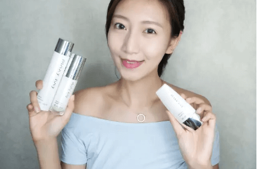这个刷新存在感的“亮白娃娃妆”你学会了吗？这个夏天就要做闪闪惹人爱的亮白娃娃，做最亮眼的那个girl哦！
最后祝所有的少女都能愉快地度过整个夏天，
越来越透亮，心情也越来越明媚！
笔芯~